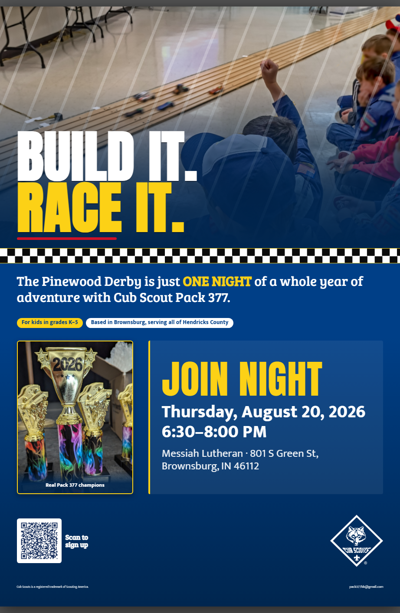
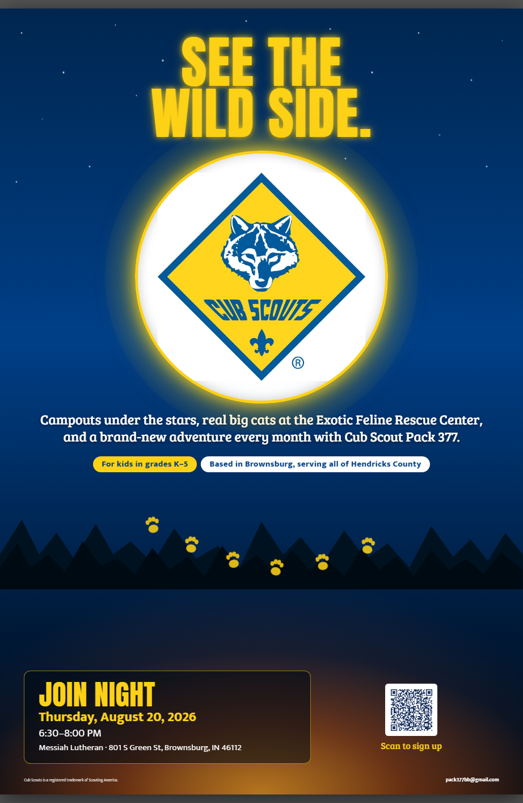
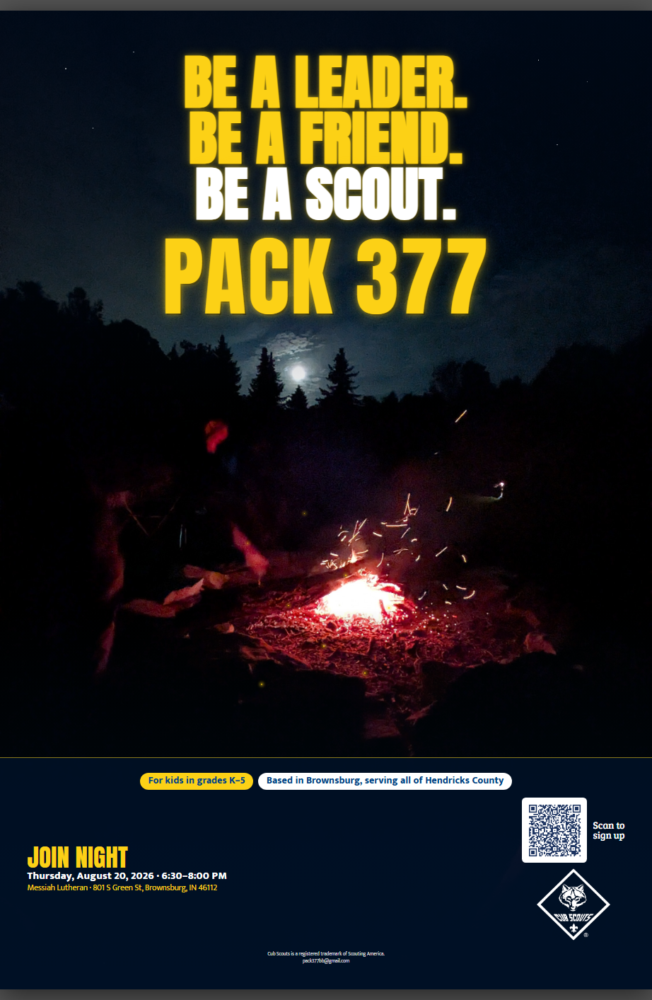

Pack 377 · Cub Scouts
PRINT A
FLYER.
SPREAD THE WORD.
Help us fill Join Night. Pick one of the Pack 377 flyer designs below, download the PDF, and print it for school folders, church boards, or the fridge. Cub Scouts is for kids in grades K–5 — we’re based in Brownsburg and welcome families from all over Hendricks County.
- For kids in grades K–5
- Based in Brownsburg, serving all of Hendricks County

Flyers to print
Same details and Join Night, four different looks. Pick the one you like, download the PDF, and print it — they’re made for handing out.
![Pack 377 'Scouting Year' flyer, simple-icon style. Cub Scouts for kids in grades K–5, based in Brownsburg and serving all of Hendricks County, Indiana. The flyer lists the year of activities month by month — Join Night, camping, pumpkin patch, community service, winter pool party, pinewood derby, Blue & Gold, cabin camping, the Exotic Feline Rescue Center, graduation, and summer camp — and gives the Join Night details: Thursday, August 20, 2026, 6:30 to 8:00 PM at Messiah Lutheran, 801 S Green St, Brownsburg.](assets/flyer-scouting-year-web.webp?v=4)


Posters & banners
Big-format posters for a display table or wall — 24×36″, in both portrait and landscape. Download and print at any copy shop. Same Join Night details as the flyers.



The event the flyers advertise
Join Night
- When
- Thursday, August 20, 2026
6:30–8:00 PM - Where
- Messiah Lutheran
801 S Green St, Brownsburg, IN 46112
No experience needed and nothing to prepare — just show up, say hi, and see if Pack 377 is a good fit for your family. We’d love to meet you.
Email us a question